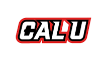
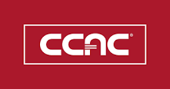

Platform engineering
ServiceNow, secure integrations, software design, and workflow automation.
Platform engineer at UPMC
I build and integrate solutions that help security teams work more efficiently.
I’m Luke Petrosky. My work brings together ServiceNow, cybersecurity, and automation to make everyday processes work a little better.
01 / A little about me
I like finding ways to make everyday work a little easier. When a task feels unnecessarily complicated or repetitive, I start thinking about how to improve it. That’s what draws me to platform engineering and automation: solving problems that make someone’s day a little less frustrating.
I’m also curious about where AI can help, including here. I used it to help build this site, while shaping the content and structure myself to make sure it reflects my experience and how I think about my work.
02 / The path so far
A foundation in cybersecurity. A growing focus on platform engineering.
Open a role to see the details.
I lead platform improvements and explore ways to make our security processes more effective, with a focus on ServiceNow and practical applications of AI.
Built and integrated secure solutions on the ServiceNow platform to enhance organizational security posture and streamline remediation efforts.
Integrated CrowdStrike, BloodHound, and Burp Suite with ServiceNow through REST APIs to connect security tools with platform workflows.
Deepened my understanding of ServiceNow’s architecture, including Business Rules, Script Includes, and how client-side and server-side scripting work together to support application behavior and integrations.
Organized a study group to help teammates prepare for the ServiceNow Certified System Administrator (CSA) certification. All team members earned the credential.
Automated cybersecurity processes with Python, PowerShell, and JavaScript, including work with the CrowdStrike, Black Kite, and BloodHound APIs.
Supported the rollout and configuration of Android tablets using IBM MaaS360.
03 / The toolkit
A mix of platform knowledge, security experience, hands-on development, and practical AI.
ServiceNow, secure integrations, software design, and workflow automation.
Vulnerability assessment, remediation, mitigation, compliance, network security, security-event analysis, and application and container security.
Scripting, API integrations, automated testing, and technical writing.
Supporting technologies across cloud platforms, infrastructure, and data.
Creating Microsoft Copilot agents and using Codex for development, while evaluating GitHub Copilot and ServiceNow Otto for team workflows.
04 / Continuing to learn
Certifications across ServiceNow, cybersecurity, networking, and cloud fundamentals.
 CSA
CSA CAD
CAD Sec+
Sec+ Net+
Net+ AZ900
AZ900
2020California University of Pennsylvania
Now PennWest California

2017Community College of Allegheny County